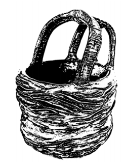

Imroz Inam
Inherited Et Al.
Watercolour pencils, textured card paper, mouldable plastic, wooden panels
The work Inherited Et Al. describes the impact of turmoil as an inherited communal emotion. Based on a true story from Kashmir. Drawing inspiration from Walid Raad’s “Atlast group project”, this work seeks to untangle the complexity of collective memory by creating imagined figures which stand in for the broader emotional and cultural experiences of a community shaped by conflict. The layering of materials aims to showcase the intricate relationship between past and present, Individual and community.
The materials represent the complex nature of emotion, reshaping itself alongside what we consider as “history”. The story presented connects with universal themes of loss, and the unseen impact of political unrest, at a psychological level.
instagram:@Imroz_inam
𖹭𖹭 back 𖹭𖹭